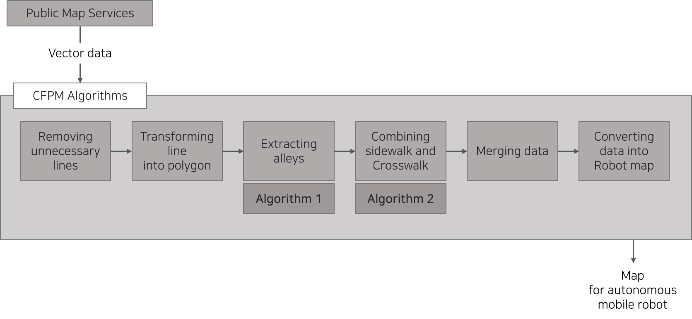
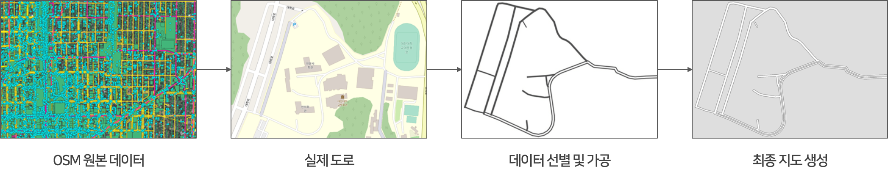
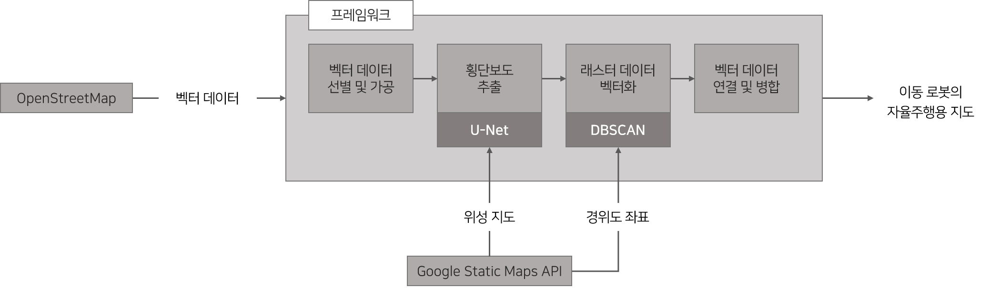
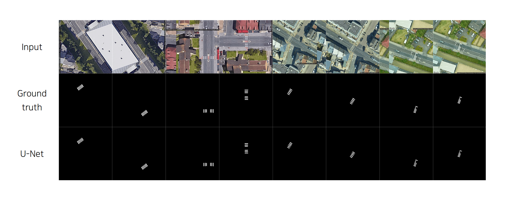

Jihoon Lee and Hongjun Kim, "Development of Cartographic Framework for Autonomous Mobile Robot using Public Maps,"
Journal of Institute of Control, Robotics and Systems, vol. 27, no. 12, pp. 1076-1083, Dec. 2021. [Scopus]
PythonLinuxROSPyCharmQGIS
* 이지훈→이서호로 개명하였음.
💡 개발의 필요성
이동 로봇의 주행을 위한 전역 경로 지도의 구축에 많은 시간과 비용이 소요됨
높은 지도 구축 비용을 절감할 수 있는 새로운 방법이 필요함
💻 개발 과정
접근성이 뛰어난 공공 맵 서비스를 활용하여 로봇이 활용할 수 있는 형태의 지도를 생성하는 프레임워크 개발

각종 공공 맵 서비스에서 제공하는 여러 벡터 데이터 수집
수집한 데이터의 속성 값을 파싱하여 로봇의 주행에 필요하지 않은 데이터와 중복된 데이터 제거
다른 데이터와 빈틈없이 연결되도록 폴리곤 데이터 가공
이동 로봇이 활용할 수 있는 지도 형태로 벡터 데이터 변환
📊 개발 결과
해당 프레임워크를 통해 이동 로봇이 사용할 수 있는 주행용 지도가 문제없이 생성된 것을 확인함
Gazebo 상에서 시뮬레이션 주행한 결과, 생성된 지도를 기반으로 전역 경로가 적절하게 생성되었으며 이동 로봇이 경로를 따라 잘 주행하는 것을 확인함
🔧 발생한 문제와 해결 방법
겹치는 데이터를 제거하는 과정에서 기준 데이터와 위치가 어긋난 데이터를 다수 발견함
QGIS의 공간 처리 스크립트 기능을 통해 폴리곤 내부에 정점을 생성하여 기준 데이터와 겹치도록 데이터를 수정함
로봇의 원활한 주행을 위해 횡단보도 데이터와 인도 데이터를 빈틈없이 연결하는 과정이 필요한데, 수집한 횡단보도 데이터의 형태가 사각형부터 육각형까지 다양해서 어떤 형태를 기준으로 잡고 길이를 연장해야 할지 고민이 됐음
사각형이 아닌 데이터의 경우 Douglas-Peucker 알고리즘을 사용하여 실제 영역에서 크게 벗어나지 않는 선에서 사각형 형태로 단순화시켰음
A Cartographic Framework for Autonomous Mobile Robot Using OpenStreetMap Data
Seoho Lee and Hongjun Kim, "A Cartographic Framework for Autonomous Mobile Robot using OpenStreetMap data,"
in Proc. of 2nd International Conference on Robotics, Automation and Artificial Intelligence (RAAI 2022), Dec. 2022. [Scopus]
PythonLinuxROSPyCharmQGIS
💡 개발의 필요성
행정안전부와 국토지리정보원 등에서 제공하는 공공 맵 서비스로는 국내 지도만 생성할 수 있음
로봇의 이동 범위 확대를 위해 더 넓은 범위의 지도가 필요함
💻 개발 과정
접근성과 활용성이 뛰어난 공공 맵 서비스인 OpenStreetMap(OSM)을 활용하도록 프레임워크 수정

수집한 데이터에 포함된 태그를 파싱하여 로봇의 주행에 필요한 데이터만 따로 선별
주행 가능한 영역을 모두 포함하도록 width 데이터를 이용해 라인 데이터를 폴리곤 데이터로 변환
📊 개발 결과
해당 프레임워크를 통해 이동 로봇이 사용할 수 있는 주행용 지도가 문제없이 생성된 것을 확인함
OSM을 활용함으로써 로봇의 이동 가능 범위를 국외로 확장할 수 있게 됨
딥러닝을 활용한 공공 맵 기반 자율주행 로봇용 지도 제작 프레임워크
석사 졸업 논문 (2023)
PythonPyTorchscikit-learnLinuxROSPyCharmQGIS
💡 개발의 필요성
OSM은 접근성과 활용성이 뛰어나지만, 사용자가 직접 지도 데이터를 추가하고 편집하는 방식으로 운영됨
지도 데이터가 실제와 다르거나 누락된 부분이 존재할 수 있으므로 이를 보완할 수 있는 추가적인 방법이 필요함
💻 개발 과정
실제 횡단보도와 OSM에서 수집한 벡터 데이터를 비교하여 누락된 부분을 추출한 후, 기존 데이터와 결합하는 방식으로 진행

Google static maps API를 통해 횡단보도 이미지를 임의로 100장 정도 수집한 후 수작업으로 레이블 데이터 생성
Data augmentation 과정을 통해 원본 데이터를 변형하여 약 1100쌍의 데이터 생성

Semantic image segmentation 모델 3종(FCN, SegNet, U-Net)의 학습 결과를 mean IoU 계산을 통해 비교한 결과, U-Net의 mIoU가 약 75%로 가장 높았음
U-Net을 통해 횡단보도 데이터를 추출한 후, 교통섬 등과 같이 한 번에 여러 개의 횡단보도가 추출되는 상황을 고려하여 DBSCAN 알고리즘을 통해 클러스터링을 수행함
래스터 횡단보도 데이터의 경위도 좌표를 계산하여 벡터화한 후, 기존 데이터와 결합함
📊 개발 결과
Gazebo 상에서 시뮬레이션 주행한 결과, 최단 경로가 적절하게 생성된 것을 확인함
지도 상에서 누락된 데이터를 보완하는 과정을 통해 이동로봇이 보다 효율적으로 이동하게 되었음
🔧 발생한 문제와 해결 방법
모델을 충분히 학습시키려면 대량의 데이터가 필요한데, 수작업으로 필요한 데이터를 일일이 레이블링 하는 데에는 한계가 있었음
원본 데이터에 변형을 가하는 Data augmentation 기법을 통해 학습에 사용할 데이터셋의 수를 충분히 늘려주었음
추출한 데이터를 기존 데이터와 연결할 때 데이터의 중심점만 계산해서 이어주면 충분할 것이라 생각했는데,
교통섬처럼 여러 개의 횡단보도가 각기 다른 방향으로 한 곳에 몰려 있는 곳도 있어서 단순히 중심점을 추출하는 것만으로는
데이터를 제대로 연결할 수 없었음
DBSCAN 알고리즘을 이용해 데이터를 클러스터링 해줌으로써 횡단보도를 분리하고 진행 방향을 파악함